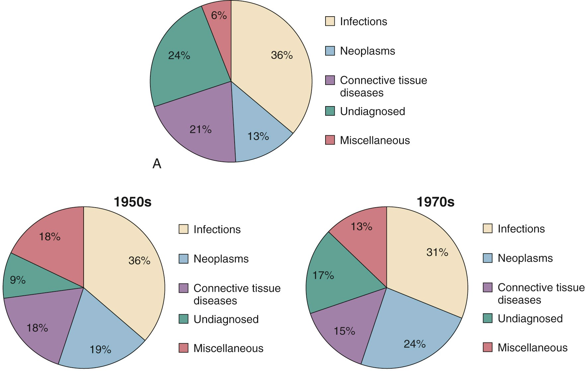
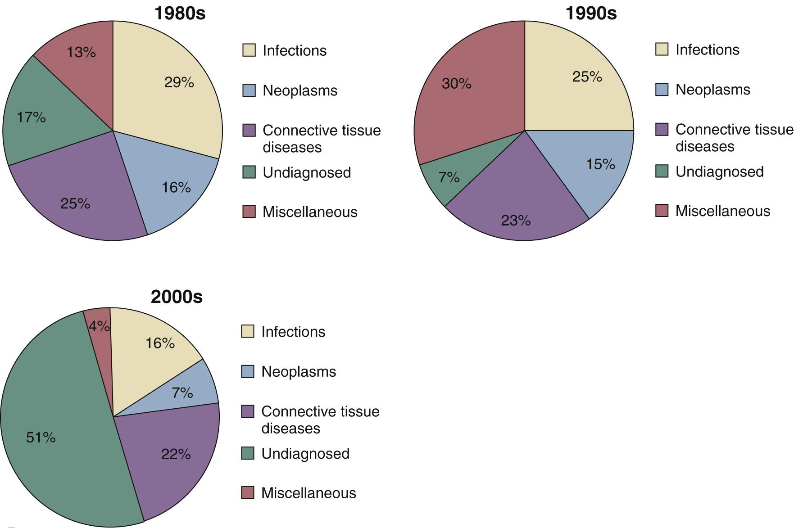

<!DOCTYPE html>
<html lang="en">
  <head>
    <meta charset="utf-8" />
    <meta name="viewport" content="width=device-width, initial-scale=1.0, maximum-scale=1.0, user-scalable=no" />

    <title></title>
    <link rel="stylesheet" href="dist/reveal.css" />
    <link rel="stylesheet" href="dist/theme/solarized.css" id="theme" />
    <link rel="stylesheet" href="" />
	<link rel="stylesheet" href="css/layout.css" />
	<link rel="stylesheet" href="plugin/customcontrols/style.css">

	<link rel="stylesheet" href="plugin/reveal-pointer/pointer.css" />


    <script defer src="dist/fontawesome/all.min.js"></script>

	<script type="text/javascript">
		var forgetPop = true;
		function onPopState(event) {
			if(forgetPop){
				forgetPop = false;
			} else {
				parent.postMessage(event.target.location.href, "app://obsidian.md");
			}
        }
		window.onpopstate = onPopState;
		window.onmessage = event => {
			if(event.data == "reload"){
				window.document.location.reload();
			}
			forgetPop = true;
		}

		function fitElements(){
			const itemsToFit = document.getElementsByClassName('fitText');
			for (const item in itemsToFit) {
				if (Object.hasOwnProperty.call(itemsToFit, item)) {
					var element = itemsToFit[item];
					fitElement(element,1, 1000);
					element.classList.remove('fitText');
				}
			}
		}

		function fitElement(element, start, end){

			let size = (end + start) / 2;
			element.style.fontSize = `${size}px`;

			if(Math.abs(start - end) < 1){
				while(element.scrollHeight > element.offsetHeight){
					size--;
					element.style.fontSize = `${size}px`;
				}
				return;
			}

			if(element.scrollHeight > element.offsetHeight){
				fitElement(element, start, size);
			} else {
				fitElement(element, size, end);
			}		
		}


		document.onreadystatechange = () => {
			fitElements();
			if (document.readyState === 'complete') {
				if (window.location.href.indexOf("?export") != -1){
					parent.postMessage(event.target.location.href, "app://obsidian.md");
				}
				if (window.location.href.indexOf("print-pdf") != -1){
					let stateCheck = setInterval(() => {
						clearInterval(stateCheck);
						window.print();
					}, 250);
				}
			}
	};


        </script>
  </head>
  <body>
    <div class="reveal">
      <div class="slides"><section  data-markdown><script type="text/template"><!-- .slide: class="drop" -->
<div class="" style="position: absolute; left: 0px; top: 0px; height: 900px; width: 1600px; min-height: 900px; display: flex; flex-direction: column; align-items: center; justify-content: center" absolute="true">

# 考古題
</div></script></section><section  data-markdown><script type="text/template"><!-- .slide: class="drop" -->
<div class="" style="position: absolute; left: 0px; top: 0px; height: 900px; width: 1600px; min-height: 900px; display: flex; flex-direction: column; align-items: center; justify-content: center" absolute="true">

1. Fever of unknown origin ( FUO ) 的定義( Petersdorf 及 Beeson, 1961 )，不包括下列何者？  
(A) 多次發燒  
(B) 體溫大於38℃  
(C) 持續2星期  
(D) 經住院檢查超過七天仍查不出原因

2. 有關體溫之敘述，下列何者正確？  
(A) 主要負責體溫調節中樞為大腦基底核  
(B) 腋溫所測得之體溫最接近核心體溫  
(C) 肛溫比口溫來的高  
(D) 正常人早上溫度比下午高1度
</div></script></section><section  data-markdown><script type="text/template"><!-- .slide: class="drop" -->
<div class="" style="position: absolute; left: 0px; top: 0px; height: 900px; width: 1600px; min-height: 900px; display: flex; flex-direction: column; align-items: center; justify-content: center" absolute="true">

1. Fever of unknown origin ( FUO ) 的定義( Petersdorf 及 Beeson, 1961 )，不包括下列何者？  
(A) 多次發燒  
(B) 體溫大於38℃  
<mark>(C) 持續2星期</mark>  
(D) 經住院檢查超過七天仍查不出原因

2. 有關體溫之敘述，下列何者正確？  
(A) 主要負責體溫調節中樞為大腦基底核  
(B) 腋溫所測得之體溫最接近核心體溫  
<mark>(C) 肛溫比口溫來的高</mark>   
(D) 正常人早上溫度比下午高1度
</div></script></section><section  data-markdown><script type="text/template"><!-- .slide: class="drop" -->
<div class="" style="position: absolute; left: 0px; top: 0px; height: 900px; width: 1600px; min-height: 900px; display: flex; flex-direction: column; align-items: center; justify-content: center" absolute="true">

3. 有關發燒的定義及其處置的敘述，下列何者錯誤？  
    (A) 70 歲男性清晨口溫38.4 ℃，屬於發燒狀態  
    (B) 心臟衰竭病人發燒，除了診治發燒的原因，也需給予退燒藥以避免增加心臟負荷  
    (C) 免疫不全病人口溫38.3 ℃，應啟動發燒診斷流程( fever work - up )  
    (D) 住院成年人發燒應規則定時給予退燒藥，以避免發燒導致的合併症  

4. 有關低嗜中性球合併發燒( febrile neutropenia ) 的敘述，下列哪一項正確？   
    (A) 定義為發燒須超過39.3 ℃  
    (B) 投予抗生素治療前，不需進行血液細菌培養檢查  
    (C) 給予白血球生成素可以有效提高病人的存活率  
    (D) 發燒使用廣效性抗生素三天後，仍持續發燒，應考量加上抗黴菌藥物
</div></script></section><section  data-markdown><script type="text/template"><!-- .slide: class="drop" -->
<div class="" style="position: absolute; left: 0px; top: 0px; height: 900px; width: 1600px; min-height: 900px; display: flex; flex-direction: column; align-items: center; justify-content: center" absolute="true">

3. 有關發燒的定義及其處置的敘述，下列何者錯誤？  
    (A) 70 歲男性清晨口溫38.4 ℃，屬於發燒狀態  
    (B) 心臟衰竭病人發燒，除了診治發燒的原因，也需給予退燒藥以避免增加心臟負荷  
    (C) 免疫不全病人口溫38.3 ℃，應啟動發燒診斷流程( fever work - up )  
    <mark>(D) 住院成年人發燒應規則定時給予退燒藥，以避免發燒導致的合併症</mark>  

4. 有關低嗜中性球合併發燒( febrile neutropenia ) 的敘述，下列哪一項正確？   
    (A) 定義為發燒須超過39.3 ℃  
    (B) 投予抗生素治療前，不需進行血液細菌培養檢查  
    (C) 給予白血球生成素可以有效提高病人的存活率  
    <mark>(D) 發燒使用廣效性抗生素三天後，仍持續發燒，應考量加上抗黴菌藥物</mark>
</div></script></section><section  data-markdown><script type="text/template"><!-- .slide: class="drop" -->
<div class="" style="position: absolute; left: 0px; top: 0px; height: 900px; width: 1600px; min-height: 900px; display: flex; flex-direction: column; align-items: center; justify-content: center" absolute="true">

5. 病人寒顫、體溫38.9 ℃。血液檢查結果WBC 4000 / μL，seg 8 %，band 2 %，monocyte 5 %。為控制感染症應優先單獨使用何種藥物治療？  
    (A) ceftazidime  
    (B) vancomycin  
    (C) cefazolin  
    (D) voriconazole

6. 發燒對人體的影響，下列敘述何者錯誤？  
    (A) 發燒可限制病原體複製，助於殺死病原體  
    (B) 發燒助於細菌分裂的物質（如：鐵、鋅）濃度下降  
    (C) 發燒有助於中止病毒的生命週期  
    (D) 發燒時會減少睡眠慢波，以保護腦部
</div></script></section><section  data-markdown><script type="text/template"><!-- .slide: class="drop" -->
<div class="" style="position: absolute; left: 0px; top: 0px; height: 900px; width: 1600px; min-height: 900px; display: flex; flex-direction: column; align-items: center; justify-content: center" absolute="true">

5. 病人寒顫、體溫38.9 ℃。血液檢查結果WBC 4000 / μL，seg 8 %，band 2 %，monocyte 5 %。為控制感染症應優先單獨使用何種藥物治療？  
    <mark>(A) ceftazidime</mark>  
    (B) vancomycin  
    (C) cefazolin  
    (D) voriconazole

6. 發燒對人體的影響，下列敘述何者錯誤？  
    (A) 發燒可限制病原體複製，助於殺死病原體  
    (B) 發燒助於細菌分裂的物質（如：鐵、鋅）濃度下降  
    (C) 發燒有助於中止病毒的生命週期  
    <mark>(D) 發燒時會減少睡眠慢波，以保護腦部</mark>
</div></script></section><section  data-markdown><script type="text/template"><!-- .slide: class="drop" -->
<div class="" style="position: absolute; left: 0px; top: 0px; height: 900px; width: 1600px; min-height: 900px; display: flex; flex-direction: column; align-items: center; justify-content: center" absolute="true">

7. 35 歲男性病人，昨天剛入院，主訴發燒和疲勞已超過 4 週，體溫多次超過 38.3 °C，絕對嗜中性白血球數目 250 / mm3，之前曾看過 2 次門診，仍無法確認發燒原因，血液培養為陰性。病人最有可能是下列何種不明原因發燒 ( fever of unknown origin , FUO ) ？   
    (A) neutropenic FUO  
    (B) hospital - associated FUO  
    (C) HIV - associated FUO  
    (D) viral infection FUO

8. 關於體溫過高的敘述，下列何者正確？  
    (A) 體溫至 39 °C 可定義為 hyperpyrexia  
    (B) 體溫超過 41.5 °C 常見於中樞神經系統出血病人  
    (C) 發燒可透過肌肉和腎臟的代謝活動散熱  
    (D) acetaminophen 可緩解熱急症 ( heat stroke ) 之高燒
</div></script></section><section  data-markdown><script type="text/template"><!-- .slide: class="drop" -->
<div class="" style="position: absolute; left: 0px; top: 0px; height: 900px; width: 1600px; min-height: 900px; display: flex; flex-direction: column; align-items: center; justify-content: center" absolute="true">

7. 35 歲男性病人，昨天剛入院，主訴發燒和疲勞已超過 4 週，體溫多次超過 38.3 °C，絕對嗜中性白血球數目 250 / mm3，之前曾看過 2 次門診，仍無法確認發燒原因，血液培養為陰性。病人最有可能是下列何種不明原因發燒 ( fever of unknown origin , FUO ) ？   
    <mark>(A) neutropenic FUO</mark>  
    (B) hospital - associated FUO  
    (C) HIV - associated FUO  
    (D) viral infection FUO

8. 關於體溫過高的敘述，下列何者正確？  
    (A) 體溫至 39 °C 可定義為 hyperpyrexia  
    <mark>(B) 體溫超過 41.5 °C 常見於中樞神經系統出血病人</mark>  
    (C) 發燒可透過肌肉和腎臟的代謝活動散熱  
    (D) acetaminophen 可緩解熱急症 ( heat stroke ) 之高燒
</div></script></section><section  data-markdown><script type="text/template"><!-- .slide: class="drop" -->
<div class="" style="position: absolute; left: 0px; top: 0px; height: 900px; width: 1600px; min-height: 900px; display: flex; flex-direction: column; align-items: center; justify-content: center" absolute="true">

9. 65 歲男性病人，有慢性胃炎和血小板低下病史，此次因上呼吸道感染引起發燒前來就診，體溫達到 38.5 °C。下列何種退燒藥物較合適？   
    (A) aspirin  
    (B) acetaminophen  
    (C) ibuprofen   
    (D) naproxen  

10. 癌症病人接受化學治療後，發生發燒併嗜中性白血球低下 ( febrile neutropenia ) ，下列處置何者最適當？ 
    (A) 經驗性抗生素治療應包括抗 MRSA ( 抗甲氧苯青黴素金黃色葡萄球菌 ) 活性的抗生素  
    (B) 經驗性抗生素治療應包括抗綠膿桿菌活性的抗生素  
    (C) 應常規合併抗細菌、抗黴菌用藥治療  
    (D) 接受化學治療的病人常規加上顆粒球-巨噬細胞群落刺激因子 ( GM - CSF ) ，可有效降低死亡率
</div></script></section><section  data-markdown><script type="text/template"><!-- .slide: class="drop" -->
<div class="" style="position: absolute; left: 0px; top: 0px; height: 900px; width: 1600px; min-height: 900px; display: flex; flex-direction: column; align-items: center; justify-content: center" absolute="true">

9. 65 歲男性病人，有慢性胃炎和血小板低下病史，此次因上呼吸道感染引起發燒前來就診，體溫達到 38.5 °C。下列何種退燒藥物較合適？   
    (A) aspirin  
    <mark>(B) acetaminophen</mark>  
    (C) ibuprofen  
    (D) naproxen

10. 癌症病人接受化學治療後，發生發燒併嗜中性白血球低下 ( febrile neutropenia ) ，下列處置何者最適當？   
    (A) 經驗性抗生素治療應包括抗 MRSA ( 抗甲氧苯青黴素金黃色葡萄球菌 ) 活性的抗生素  
    <mark>(B) 經驗性抗生素治療應包括抗綠膿桿菌活性的抗生素</mark>  
    (C) 應常規合併抗細菌、抗黴菌用藥治療  
    (D) 接受化學治療的病人常規加上顆粒球-巨噬細胞群落刺激因子 ( GM - CSF ) ，可有效降低死亡率
</div></script></section><section  data-markdown><script type="text/template"><!-- .slide: class="drop" -->
<div class="" style="position: absolute; left: 0px; top: 0px; height: 900px; width: 1600px; min-height: 900px; display: flex; flex-direction: column; align-items: center; justify-content: center" absolute="true">

11. 相對心搏過緩 ( relative bradycardia ) 是指病人的心跳速率比當時體溫所對應的預期心跳速率還慢。下列何項感染症最不可能表現出相對心搏過緩？  
    (A) Q熱  
    (B) 肝膿瘍  
    (C) 黴漿菌肺炎  
    (D) 登革熱

12. 一位20 歲男性病患，發燒數天住院治療，未使用beta-blocker，住院生命徵象為體溫38.5至39.5度C、心跳每分鐘70至80下，請問上述紀錄為下列哪些疾病之臨床表徵? (1). 沙門氏菌(Salmonella typhi) (2). 退伍軍人菌(Legionella) (3). 立克次體(Rickettsia) (4). 流感病毒(Influenza)   
    A. (1)+(3)  
    B. (2)+(3)  
    C. (3)+(4)  
    D. (1)+(2)+(3)  
    E. (1)+(2)+(3)+(4)
</div></script></section><section  data-markdown><script type="text/template"><!-- .slide: class="drop" -->
<div class="" style="position: absolute; left: 0px; top: 0px; height: 900px; width: 1600px; min-height: 900px; display: flex; flex-direction: column; align-items: center; justify-content: center" absolute="true">

11. 相對心搏過緩 ( relative bradycardia ) 是指病人的心跳速率比當時體溫所對應的預期心跳速率還慢。下列何項感染症最不可能表現出相對心搏過緩？  
    (A) Q熱  
    <mark>(B) 肝膿瘍</mark>   
    (C) 黴漿菌肺炎  
    (D) 登革熱

12. 一位20 歲男性病患，發燒數天住院治療，未使用beta-blocker，住院生命徵象為體溫38.5至39.5度C、心跳每分鐘70至80下，請問上述紀錄為下列哪些疾病之臨床表徵? (1). 沙門氏菌(Salmonella typhi) (2). 退伍軍人菌(Legionella) (3). 立克次體(Rickettsia) (4). 流感病毒(Influenza)   
    A. (1)+(3)  
    B. (2)+(3)  
    C. (3)+(4)  
    <mark>D. (1)+(2)+(3)</mark>  
    E. (1)+(2)+(3)+(4)
</div></script></section><section  data-markdown><script type="text/template"><!-- .slide: class="drop" -->
<div class="" style="position: absolute; left: 0px; top: 0px; height: 900px; width: 1600px; min-height: 900px; display: flex; flex-direction: column; align-items: center; justify-content: center" absolute="true">

# Neutropenic Fever
</div></script></section><section  data-markdown><script type="text/template"><!-- .slide: class="drop" -->
<div class="" style="position: absolute; left: 0px; top: 0px; height: 900px; width: 1600px; min-height: 900px; display: flex; flex-direction: column; align-items: center; justify-content: center" absolute="true">

- 在接受化學治療後出現嗜中性球低下的癌症病患中，有很高比例會發燒
- 中性球低下性發燒（neutropenic fever, NF）的標準定義為：
	- 口溫單次 ≥38.3°C，或  
	- 體溫 ≥38.0°C 且持續超過 1 小時，**且符合下列任一條件**：  
		- 絕對嗜中性球計數（ANC）< 500 cells/µL，或  
		- 預期在 48 小時內 ANC 將下降至 < 500 cells/µL
- 雖然發燒是感染最常見的表現，但並非唯一指標
	- 對於嗜中性球低下病患，若出現無其他解釋的疼痛、壓痛或紅腫等可能與感染相關的症狀，也應採取與發燒相同的處置原則
</div></script></section><section  data-markdown><script type="text/template"><!-- .slide: class="drop" -->
<div class="" style="position: absolute; left: 0px; top: 0px; height: 900px; width: 1600px; min-height: 900px; display: flex; flex-direction: column; align-items: center; justify-content: center" absolute="true">

- 嗜中性球低下性發燒通常被視為感染所致，但實際上僅有少數病例能確定感染來源
- 感染可透過**微生物學診斷**（例如血液培養中發現綠膿桿菌菌血症），或**臨床診斷**（例如出現腹痛與血性腹瀉，但血培為陰性，推測為嗜中性球低下性腸炎）來確認
- 使用傳統診斷方法（如例行培養、血清學檢查與影像學）大約能在40%的 NF 發作中找到感染證據
- 使用血漿中游離 DNA 的聚合酶連鎖反應（cell-free DNA PCR）等新型診斷工具，**多數情況下可辨識潛在的細菌病因**
- 這些被偵測到的細菌多數來自皮膚與腸道的正常菌叢（與傳統培養中常見菌種相同），因為引起嗜中性球低下的癌症治療常會破壞這些物理屏障
	- 在嗜中性球低下期間的感染，**通常是由病患自體微生物組所攜帶的微生物所引起**
</div></script></section><section  data-markdown><script type="text/template"><!-- .slide: class="drop" -->
<div class="" style="position: absolute; left: 0px; top: 0px; height: 900px; width: 1600px; min-height: 900px; display: flex; flex-direction: column; align-items: center; justify-content: center" absolute="true">

## 處置
### 第一次發燒

- 在病患出現嗜中性球低下性發燒時，應迅速完成病史與理學檢查，重點放在可能的感染入口處，如<mark>血管導管出口、口腔、以及肛門周圍</mark>
- 接著應立即抽取血液培養，並啟動具有廣效抗菌作用的抗生素治療，其應涵蓋對***Pseudomonas aeruginosa***的活性；理想情況下，應於<mark>1小時內</mark>給藥
- 若無呼吸道症狀或體徵，胸部影像學檢查的診斷效益尚不明確
- 嗜中性球低下性發燒單一用藥中，研究最充足的抗生素包括：
	- Ceftazidime  
	- Cefepime  
	- Imipenem  
	- Meropenem  
	- Piperacillin-tazobactam
</div></script></section><section  data-markdown><script type="text/template"><!-- .slide: class="drop" -->
<div class="" style="position: absolute; left: 0px; top: 0px; height: 900px; width: 1600px; min-height: 900px; display: flex; flex-direction: column; align-items: center; justify-content: center" absolute="true">

- 若病患有局部感染表現（如呼吸道、腹腔內或導管相關感染），處置策略不同
- 若病患有**休克、低血壓或器官損傷徵象（例如意識改變、肺水腫、急性腎損傷）**，則應使用更廣效的抗生素療程
- 針對疑似或已確診敗血性休克者，具體用藥方案因人而異，但範例組合為：
	- Vancomycin  
	- Meropenem  
	- 可酌加 aminoglycoside  
	- 若有念珠菌感染風險，則加入 echinocandin 抗黴菌藥物
</div></script></section><section  data-markdown><script type="text/template"><!-- .slide: class="drop" -->
<div class="" style="position: absolute; left: 0px; top: 0px; height: 900px; width: 1600px; min-height: 900px; display: flex; flex-direction: column; align-items: center; justify-content: center" absolute="true">

- Glycopeptide類抗生素（如vancomycin）僅在以下情況中添加：
	- 敗血症  
	- 明顯的軟組織感染  
	- 懷疑導管出口感染  
	- 肺炎  
	- 嚴重黏膜炎（若使用 ceftazidime，因黏膜炎為草綠色鏈球菌感染風險）  
	- 已知 MRSA 或抗藥性肺炎鏈球菌帶菌者
</div></script></section><section  data-markdown><script type="text/template"><!-- .slide: class="drop" -->
<div class="" style="position: absolute; left: 0px; top: 0px; height: 900px; width: 1600px; min-height: 900px; display: flex; flex-direction: column; align-items: center; justify-content: center" absolute="true">

- 在啟動抗生素後，病患的發燒通常於24–72小時內緩解
- 若已確認感染，抗生素療程應依照特定病原延續適當療程長度
- 當血液培養成功分離出病原時，是否要持續廣效抗生素或依藥敏結果縮窄療法，專家間尚存爭議
- 若未分離出病原，亦無明確感染灶，對於嗜中性球性發燒於抗生素治療下緩解後之最佳處置策略亦仍具爭議
	- 過去建議持續抗生素至嗜中性球回升，但近年研究顯示：**若符合特定標準（如臨床穩定），可考慮降階治療（de-escalation）或停藥，改為預防性治療或觀察**
		- 此策略的優點包括減少抗生素使用、降低抗藥菌產生風險，但也需平衡是否可能造成感染治療不足
		- 仍需大型隨機多中心試驗仍需進一步驗證安全性與益處
</div></script></section><section  data-markdown><script type="text/template"><!-- .slide: class="drop" -->
<div class="" style="position: absolute; left: 0px; top: 0px; height: 900px; width: 1600px; min-height: 900px; display: flex; flex-direction: column; align-items: center; justify-content: center" absolute="true">

### 持續發燒

- 若在接受經驗性抗生素治療期間，病人持續發燒但尚無明確診斷，有實證支持且臨床指引亦建議：**在未出現臨床惡化或新的微生物學證據時，應持續原抗生素療程，無須添加或更換藥物**
- 抗菌療法僅應在出現<mark>新臨床症狀（如低血壓）或新的微生物學資料（如血培陽性）</mark>時進行調整，而**不應僅因為發燒持續存在**
- 在中性球低下期間持續發燒的時間越長，發展為<mark>侵襲性真菌感染（IFD）</mark>的機率越高
- 根據病患過去病史、是否使用抗黴菌預防藥物、與當地實務習慣，可考慮以下兩種策略：
	- 經驗性抗黴菌療法（empirical antifungal therapy）：發燒持續<mark>5天後</mark>即啟動抗黴菌藥物，為過去數十年的標準做法
	- 預警性抗黴菌策略（preemptive antifungal strategy）：進一步執行<mark>影像、血清學或分子診斷</mark>等檢查以偵測隱性真菌感染，僅在有佐證時才開始使用抗黴菌藥物，可在維持相似療效的同時減少不必要的抗黴菌藥物使用
</div></script></section><section  data-markdown><script type="text/template"><!-- .slide: class="drop" -->
<div class="" style="position: absolute; left: 0px; top: 0px; height: 900px; width: 1600px; min-height: 900px; display: flex; flex-direction: column; align-items: center; justify-content: center" absolute="true">

# Fever of Unknown Origin
From Mandell, Douglas, and Bennett’s *Principles and Practice of Infectious Diseases*, 9th ed. (2020)
</div></script></section><section  data-markdown><script type="text/template"><!-- .slide: class="drop" -->
<div class="" style="position: absolute; left: 0px; top: 0px; height: 900px; width: 1600px; min-height: 900px; display: flex; flex-direction: column; align-items: center; justify-content: center" absolute="true">

## 最早的定義

- Petersdorf & Beeson（1961）：  
	- 多次出現高於<mark>38.3°C（100.9°F）</mark>的發燒  
	- 在住院接受至少<mark>1週</mark>檢查後，持續發燒達<mark>3週</mark>以上仍無法確診  
- Durack 和 Street（1991）：  
	- 需接受至少<mark>3天</mark>的檢查  
	- 將FUO區分為四種亞型：  
		- **經典型FUO**：符合 Petersdorf 和 Beeson 定義，但於門診進行檢查  
		- **院內型（醫療相關）FUO**  
		- **嗜中性球低下型（免疫缺陷型）FUO**  
		- **HIV相關型FUO**  
- 發燒持續時間越長才就醫，越不容易找到明確診斷
</div></script></section><section  data-markdown><script type="text/template"><!-- .slide: class="drop" -->
<div class="" style="position: absolute; left: 0px; top: 0px; height: 900px; width: 1600px; min-height: 900px; display: flex; flex-direction: column; align-items: center; justify-content: center" absolute="true">

## 經典型FUO
</div></script></section><section  data-markdown><script type="text/template"><!-- .slide: class="drop" -->
<div class="" style="position: absolute; left: 0px; top: 0px; height: 900px; width: 1600px; min-height: 900px; display: flex; flex-direction: column; align-items: center; justify-content: center" absolute="true">


</div></script></section><section  data-markdown><script type="text/template"><!-- .slide: class="drop" -->
<div class="" style="position: absolute; left: 0px; top: 0px; height: 900px; width: 1600px; min-height: 900px; display: flex; flex-direction: column; align-items: center; justify-content: center" absolute="true">


</div></script></section><section  data-markdown><script type="text/template"><!-- .slide: class="drop" -->
<div class="" style="position: absolute; left: 0px; top: 0px; height: 900px; width: 1600px; min-height: 900px; display: flex; flex-direction: column; align-items: center; justify-content: center" absolute="true">

### 老年人

- 經典型FUO在年齡超過65歲患者中最明顯的特徵之一，是<mark>結締組織疾病</mark>被診斷為病因的頻率相對較高  
	- 在已開發國家，結締組織疾病甚至超越感染，成為老年人經典型FUO的最常見病因
	- 主要是因為<mark>顳動脈炎與僵直性多肌痛</mark>在此族群中相當常見
	- 可惜的是，這些疾病的症狀多為亞急性且不具特異性，導致診斷常被忽略或延遲
- 在老年FUO病患中，若診斷為感染，其常見病因包括<mark>腹腔膿瘍、複雜性尿路感染、結核病與心內膜炎</mark>
- 在老年患者中，FUO無法診斷的比例相對較低
- 經典型FUO若發生在老年人，其預後明顯較年輕患者差
	- 主要是因為<mark>惡性腫瘤</mark>在老年人中的發生率較高
</div></script></section><section  data-markdown><script type="text/template"><!-- .slide: class="drop" -->
<div class="" style="position: absolute; left: 0px; top: 0px; height: 900px; width: 1600px; min-height: 900px; display: flex; flex-direction: column; align-items: center; justify-content: center" absolute="true">

#### 不明原因發燒（FUO）患者系列（1990 年前）中老年與年輕患者之最終診斷比較

| 診斷類別              | <65 歲 (152) | >65 歲 (201) |
| :---------------- | :---------- | :---------- |
| 感染性疾病             | 33 (21%)    | 72 (35%)    |
| 膿瘍                | 6           | 25          |
| 心內膜炎              | 2           | 14          |
| 結核病               | 4           | 20          |
| 病毒感染              | 8           | 1           |
| 腫瘤                | 8 (5%)      | 37 (19%)    |
| 血液腫瘤              | 3           | 19          |
| 實體腫瘤              | 5           | 18          |
| 多系統疾病<sup>1</sup> | 27 (17%)    | 57 (28%)    |
| 其他雜項<sup>2</sup>  | 39 (26%)    | 17 (8%)     |
| 其他                | 13          | 12          |
| 無診斷結果             | 45 (29%)    | 18 (9%)     |

<!-- .element: style="font-size: 28px; line-height: 1.5em; display: flex; flex-direction: column; align-items: center; justify-content: center" align="center" -->

<sup>1</sup> 包含風濕性疾病、結締組織病、血管炎（如顳動脈炎）、僵直性多肌痛、與類肉瘤病
<sup>2</sup> 包含偽造性發燒（7 例）、習慣性高體溫（5 例）與藥物引起發燒（3 例）

<!-- .element: style="font-size: 18px; line-height: 1.2em" -->
</div></script></section><section  data-markdown><script type="text/template"><!-- .slide: class="drop" -->
<div class="" style="position: absolute; left: 0px; top: 0px; height: 900px; width: 1600px; min-height: 900px; display: flex; flex-direction: column; align-items: center; justify-content: center" absolute="true">

## 院內型（醫療相關）FUO
</div></script></section><section  data-markdown><script type="text/template"><!-- .slide: class="drop" -->
<div class="" style="position: absolute; left: 0px; top: 0px; height: 900px; width: 1600px; min-height: 900px; display: flex; flex-direction: column; align-items: center; justify-content: center" absolute="true">

- 院內型（健康照護相關）FUO是指病人在接受其他疾病的醫療處置期間，首次出現發燒的情況
- 通常與醫療環境中的風險因子有關，包括<mark>手術、泌尿道或呼吸道侵入性操作、血管內導管、藥物治療以及長期臥床</mark>等
- 常見導致健康照護相關 FUO 的原因包括：
	- 藥物熱  
	- 術後併發症（例如隱性膿瘍）  
	- 敗血性血栓靜脈炎  
	- 反覆性肺栓塞  
	- 心肌梗塞  
	- 惡性腫瘤  
	- 輸血反應  
	- 因*Clostridioides difficile*引起的結腸炎
</div></script></section><section  data-markdown><script type="text/template"><!-- .slide: class="drop" -->
<div class="" style="position: absolute; left: 0px; top: 0px; height: 900px; width: 1600px; min-height: 900px; display: flex; flex-direction: column; align-items: center; justify-content: center" absolute="true">

### 術後病患

- 多篇報告指出，術後發燒的確切原因往往難以辨識
	- 僅有<10%的發燒病患能確認特定病理原因
- 術後發燒相當常見，通常反映的是手術所造成的<mark>組織損傷</mark>後釋放致熱性細胞激素與介白素所引發的反應，而非感染
	- 手術後<mark>第1至第5天內</mark>出現的發燒，是人工關節置換術這類重大手術引發的發炎反應之一部分
	- 雖然發燒是某些手術常見的表現，但大多為短暫現象，並不符合經典FUO的定義
	- 術後發燒通常無需進行大量針對罕見病因的檢查
</div></script></section><section  data-markdown><script type="text/template"><!-- .slide: class="drop" -->
<div class="" style="position: absolute; left: 0px; top: 0px; height: 900px; width: 1600px; min-height: 900px; display: flex; flex-direction: column; align-items: center; justify-content: center" absolute="true">

### 加護病房病患

- 在加護病房中，發燒相當常見
	- 通常在入住ICU初期即出現，此時多為<mark>非感染性</mark>病因，預後相對良好
	- 若發燒持續時間較長，則與較差的預後有關，多數這類病人同時合併多種感染
- <mark>健康照護相關性鼻竇炎</mark>在ICU中十分常見，特別是機械通氣時仰躺姿勢與氣管內管、胃管、鼻胃管的使用所致，應在評估ICU病患之FUO時列入考量
- 大多數ICU病人的發燒原因，與一般健康照護相關性發燒原因無異
- 對於合併呼吸衰竭、發燒與非特異性肺部X光陰影的病人，呼吸器相關肺炎（VAP）經常未被診斷
	- 急性呼吸窘迫症候群（ARDS）病患發展出肺炎的時間通常早於非ARDS病患
	- 肺部膿瘍通常能在影像學檢查中被明顯辨識，因此較不可能成為FUO的原因
</div></script></section><section  data-markdown><script type="text/template"><!-- .slide: class="drop" -->
<div class="" style="position: absolute; left: 0px; top: 0px; height: 900px; width: 1600px; min-height: 900px; display: flex; flex-direction: column; align-items: center; justify-content: center" absolute="true">

### 中風病患

- 在近期發生中風的病患中，發燒通常是感染所致
	- 最常見的是與導尿相關的泌尿道感染或呼吸道感染
- 在某些情況下無法找到明確感染病灶，且發燒對經驗性抗生素治療無反應時，發燒可能與中風本身有關
- 在一項針對330名因急性中風住院病患的研究中發現，非感染性發燒最常與顱內<mark>mass effect</mark>有關，且通常比感染性發燒<mark>更早</mark>出現在中風發作後
</div></script></section><section  data-markdown><script type="text/template"><!-- .slide: class="drop" -->
<div class="" style="position: absolute; left: 0px; top: 0px; height: 900px; width: 1600px; min-height: 900px; display: flex; flex-direction: column; align-items: center; justify-content: center" absolute="true">

## 嗜中性球低下（免疫缺陷型）FUO

- 各種免疫抑制狀態會不同程度地增加感染併發症的風險 → 免疫抑制患者可能是所有族群中 FUO發生率最高的群體
- 由於免疫反應受損，除發燒外的發炎表現常常缺乏或減弱  → 臨床特徵不典型，甚至在原本應可從影像學辨識的感染中也無異常影像
</div></script></section><section  data-markdown><script type="text/template"><!-- .slide: class="drop" -->
<div class="" style="position: absolute; left: 0px; top: 0px; height: 900px; width: 1600px; min-height: 900px; display: flex; flex-direction: column; align-items: center; justify-content: center" absolute="true">

- 對於細胞媒介免疫功能受損的患者來說，FUO通常不是由典型化膿性細菌感染所致
	- 67%由感染引起：
		- 呼吸道感染（28.8%）  
		- 二次性革蘭氏陰性桿菌菌血症（15.7%）  
		- 泌尿生殖道感染（12.9%）  
		- 皮膚與軟組織感染（11.3%）  
		- 原發性菌血症（11.0%）  
	- 23%為非感染性病因，例如惡性腫瘤、轉移性疾病與藥物熱
		- 腫瘤相關發燒在非嗜中性球低下病患中較常見（41%）  
		- 藥物熱在嗜中性球低下者中較常見（13%）  
	- 10%無法確定病因
</div></script></section><section  data-markdown><script type="text/template"><!-- .slide: class="drop" -->
<div class="" style="position: absolute; left: 0px; top: 0px; height: 900px; width: 1600px; min-height: 900px; display: flex; flex-direction: column; align-items: center; justify-content: center" absolute="true">

- 在接受骨髓抑制性化療的癌症患者中，嗜中性球低下與淋巴球低下相當常見
	- 嗜中性球低下是一種高危險免疫缺陷狀態
- 嗜中性球低下患者中，發燒事件非常常見
	- 許多此類發燒為短暫現象，因為若不是對治療有迅速反應，就是致命性感染
	- 由於菌血症與敗血症為常見原因，當嗜中性球低下病患出現發燒時，<mark>應立即給予經驗性廣效抗生素治療</mark>，不應等待培養結果
- 僅有約35%的延長性發燒性嗜中性球低下個案（通常定義為在使用抗菌藥物<mark>7天後</mark>仍持續發燒、檢查無明確感染病灶，且預期嗜中性球低下持續 >7 天）會對廣效抗生素治療有反應 → 可能為<mark>真菌感染</mark>
</div></script></section><section  data-markdown><script type="text/template"><!-- .slide: class="drop" -->
<div class="" style="position: absolute; left: 0px; top: 0px; height: 900px; width: 1600px; min-height: 900px; display: flex; flex-direction: column; align-items: center; justify-content: center" absolute="true">

- 儘管G-CSF使用的普及使嗜中性球低下的持續時間縮短，但其<mark>最低值與持續時間</mark>，仍與發燒與感染的發生率，以及死亡率顯著相關
	- 當嗜中性球與淋巴球數持續低於<mark>500 cells/mm³</mark>的時間越長，嚴重感染的風險也越高
	- 當嗜中性球數高於1500 cells/mm³，或預期低下時間少於 7 天，則發燒與感染發生率明顯下降
- 死亡率最高的病患通常為：  
	- 持續性重度嗜中性球低下（<100 cells/mm³ 持續超過7天）
	- 初始嗜中性球數已低於 <1000 cells/mm³ 且進一步下降者
</div></script></section><section  data-markdown><script type="text/template"><!-- .slide: class="drop" -->
<div class="" style="position: absolute; left: 0px; top: 0px; height: 900px; width: 1600px; min-height: 900px; display: flex; flex-direction: column; align-items: center; justify-content: center" absolute="true">

## HIV 相關FUO

- HIV感染者中出現發燒的情況非常常見，這是一個特殊的免疫缺陷亞群，其病例數之多已足以構成FUO的獨立分類
- HIV感染的初期階段常表現為類似單核球增多症，其中發燒是主要症狀
	- 初期HIV感染常因症狀不具特異性，且發生於血清抗體轉陽之前（空窗期），導致診斷被忽略
- 在初期症狀緩解後，HIV感染者進入長期的亞臨床感染階段（潛伏期），此期間多數人並無發燒
</div></script></section><section  data-markdown><script type="text/template"><!-- .slide: class="drop" -->
<div class="" style="position: absolute; left: 0px; top: 0px; height: 900px; width: 1600px; min-height: 900px; display: flex; flex-direction: column; align-items: center; justify-content: center" absolute="true">

- 若未接受治療，HIV感染進入晚期後，發燒事件變得常見，且多半代表有其他合併疾病
	- 這些疾病多為具破壞力的<mark>伺機性感染</mark>，且因免疫系統功能異常與先前治療影響，常呈現<mark>不典型臨床表現</mark>
	- 伺機性感染的具體頻率在不同地區會因地理流行病學而異
	- <mark>分枝桿菌感染</mark>為最常見的FUO原因，而結締組織疾病則極為罕見
	- 免疫重建發炎症候群（IRIS）也是可能的原因之一
- 當患者開始服用高效能抗反轉錄病毒治療（HAART）並成功抑制病毒量後，FUO的發生率大幅下降
	- 一項研究中發現HAART開始前，FUO的年發生率為每100名HIV感染者2.57至3.66次，開始後則降至0.84至1.24次
	- 另一研究指出，未接受治療者中FUO發生率為 3%，而接受治療者僅為0.6%
</div></script></section><section  data-markdown><script type="text/template"><!-- .slide: class="drop" -->
<div class="" style="position: absolute; left: 0px; top: 0px; height: 900px; width: 1600px; min-height: 900px; display: flex; flex-direction: column; align-items: center; justify-content: center" absolute="true">

<div class="has-light-background" style="background-color: white; padding: 0 20px; box-sizing: border-box; position: absolute; left: 0%; top: 0%; height: 10%; width: 100%; display: flex; flex-direction: column; align-items: flex-start; justify-content: space-evenly" align="left">

 <div class="block">

### 70 例HIV相關FUO之病因（CID 1999;28:341）
</div>


</div>

<div class="" style="position: absolute; left: 2%; top: 20%; height: 75%; width: 32%; display: flex; flex-direction: column; align-items: flex-start; justify-content: flex-start" align="left">

<div class="block">

| 病因                          | 病例數 (%)  |
| :-------------------------- | :------- |
| **感染**                      |          |
| 播散性非結核分枝桿菌                  | 22 (31%) |
| _Pneumocystis jirovecii_ 肺炎 | 10 (13%) |
| 巨細胞病毒 (CMV)                 | 8 (11%)  |
| Histoplasmosis              | 5 (7%)   |
| 其他病毒感染（非CMV）<sup>1</sup>    | 5 (7%)   |
</div>


</div>

<div class="" style="position: absolute; left: 35%; top: 20%; height: 75%; width: 32%; display: flex; flex-direction: column; align-items: flex-start; justify-content: flex-start" align="left">

<div class="block">

| 病因                        | 病例數 (%)  |
| :------------------------ | :------- |
| **感染**                    |          |
| 細菌感染                      | 4 (5%)   |
| 結核分枝桿菌（TB）                | 4 (5%)   |
| 其他真菌感染<sup>2</sup>        | 2 (3%)   |
| 寄生蟲感染<sup>3</sup>         | 2 (3%)   |
| _Mycobacterium genavense_ | 1 (1%)   |
| **小計**                    | 63 (88%) |
</div>


</div>

<div class="" style="position: absolute; left: 68%; top: 20%; height: 75%; width: 32%; display: flex; flex-direction: column; align-items: flex-start; justify-content: flex-start" align="left">

<div class="block">

| 病因                | 病例數 (%) |
| :---------------- | :------ |
| **腫瘤**            |         |
| 淋巴瘤               | 5 (7%)  |
| 卡波西肉瘤             | 1 (1%)  |
| **小計**            | 6 (8%)  |
| **其他**            |         |
| 藥物熱               | 2 (3%)  |
| Castleman disease | 1 (1%)  |
| **小計**            | 3 (4%)  |
</div>


</div>


</div>

<!-- .element: style="font-size: 30px; line-height: 1.5em; display: flex; flex-direction: column; align-items: flex-start; justify-content: space-evenly" align="left" -->


<div class="" style="position: absolute; left: 0%; top: 94%; height: 6%; width: 100%; display: flex; flex-direction: column; align-items: flex-end; justify-content: flex-end" align="right">

<div class="block">

<sup>1</sup>包括 C 型肝炎、B 型肝炎、腺病毒肺炎、單純皰疹食道炎、帶狀皰疹腦炎（各1例）
<sup>2</sup>包括播散性隱球菌病與肺部曲黴菌病（各1例）
<sup>3</sup>包括腦弓形蟲病與播散性隱孢子蟲感染（各1例）
<!-- .element: style="font-size: 18px; line-height: 1em" -->
</div>


</div>
</div></script></section><section  data-markdown><script type="text/template"><!-- .slide: class="drop" -->
<div class="" style="position: absolute; left: 0px; top: 0px; height: 900px; width: 1600px; min-height: 900px; display: flex; flex-direction: column; align-items: center; justify-content: center" absolute="true">

# 診斷
</div></script></section><section  data-markdown><script type="text/template"><!-- .slide: class="drop" -->
<div class="" style="position: absolute; left: 0px; top: 0px; height: 900px; width: 1600px; min-height: 900px; display: flex; flex-direction: column; align-items: center; justify-content: center" absolute="true">

- 多數經典型FUO的患者其實並非罹患罕見疾病，而是表現出<mark>常見疾病的非典型症狀</mark>
- 經典型FUO所帶來的重要教訓是：在許多情況下，<mark>病史與身體檢查</mark>所得資訊應被更充分利用
- 評估FUO病患通常包括以下項目：
	- 完整病史  
	- 確認病人是否真的有發燒  
	- 評估發燒模式  
	- <mark>反覆進行理學檢查</mark>
	- 各項實驗室檢驗  
	- 重要影像學檢查  
	- 侵入性診斷程序
</div></script></section><section  data-markdown><script type="text/template"><!-- .slide: class="drop" -->
<div class="" style="position: absolute; left: 0px; top: 0px; height: 900px; width: 1600px; min-height: 900px; display: flex; flex-direction: column; align-items: center; justify-content: center" absolute="true">

<div class="has-light-background" style="background-color: white; padding: 0 20px; box-sizing: border-box; position: absolute; left: 0%; top: 0%; height: 10%; width: 100%; display: flex; flex-direction: column; align-items: flex-start; justify-content: space-evenly" align="left">

 <div class="block">

## FUO患者之一般性診斷評估
</div>


</div>

<div class="" style="position: absolute; left: 2%; top: 20%; height: 75%; width: 32%; display: flex; flex-direction: column; align-items: flex-start; justify-content: flex-start" align="left">

<div class="block">

- 完整病史採集  
- 重複進行理學檢查  
- 全血球計數（CBC）  
- 常規血液生化檢查，包括 LDH、肝功能指數（LFTs）與血清鐵蛋白（ferritin）  
- 尿液檢查，包括顯微鏡檢查  
- 胸部X光攝影  
- 血液培養：需在未接受抗生素治療期間抽取三管或以上樣本
</div>


</div>

<div class="" style="position: absolute; left: 35%; top: 20%; height: 75%; width: 32%; display: flex; flex-direction: column; align-items: flex-start; justify-content: flex-start" align="left">

<div class="block">

- 紅血球沈降速率（ESR）  
- 抗核抗體（ANA）檢查  
- 類風濕因子（RF）  
- 巨細胞病毒（CMV）IgM 抗體或血中病毒檢測  
- 兒童與青少年建議檢查異嗜性抗體（heterophil antibody test）  
- 結核菌素皮膚試驗或全血干擾素-γ釋放試驗（IGRA）  
</div>


</div>

<div class="" style="position: absolute; left: 68%; top: 20%; height: 75%; width: 32%; display: flex; flex-direction: column; align-items: flex-start; justify-content: flex-start" align="left">

<div class="block">

- 腹部、骨盆或其他部位之電腦斷層掃描（CT）  
- 核磁共振造影（MRI）  
- 放射性核素掃描  
- HIV 抗體或病毒檢測  
- 對上述檢查發現之任何異常進一步追蹤評估  
- 下肢靜脈超音波檢查（venous duplex imaging）
</div>


</div>


<style>
.small-indent > ul { 
   padding-left: 1em;
}
</style>

</div>

<!-- .element: style="font-size: 32px; line-height: 1.6em; display: flex; flex-direction: column; align-items: flex-start; justify-content: space-evenly" class="small-indent" align="left" -->


<div class="" style="position: absolute; left: 0%; top: 94%; height: 6%; width: 100%; display: flex; flex-direction: column; align-items: flex-end; justify-content: flex-end" align="right">


</div>
</div></script></section><section  data-markdown><script type="text/template"><!-- .slide: class="drop" -->
<div class="" style="position: absolute; left: 0px; top: 0px; height: 900px; width: 1600px; min-height: 900px; display: flex; flex-direction: column; align-items: center; justify-content: center" absolute="true">

## 病史

- 完整病史一向被視為評估複雜疾病（如 FUO）之基石
- 病史在決定初步檢查項目的選擇上尤其重要
- 應特別留意以下事項：  
	- 最近的旅遊史  
	- 是否接觸寵物或其他動物  
	- 工作環境  
	- 是否曾接觸出現類似症狀的人  
- 家族史也應仔細檢視，以排除遺傳性發燒病因，例如地中海家族熱
- 過去病史應確認是否曾有FUO發作，或曾被診斷為某些疾病（如淋巴瘤、風濕熱或腹腔疾病），其併發症或再活化可能解釋此次發燒的來源
	- 在<mark>復發性FUO</mark>的情況下，<mark>罕見疾病</mark>的機率相較單次發作更高，也更可能無法確診
- 應完整列出病人正在使用的所有藥物，以評估是否為藥物熱的可能來源
</div></script></section><section  data-markdown><script type="text/template"><!-- .slide: class="drop" -->
<div class="" style="position: absolute; left: 0px; top: 0px; height: 900px; width: 1600px; min-height: 900px; display: flex; flex-direction: column; align-items: center; justify-content: center" absolute="true">

## 發燒的確認與發燒型態

- 在評估FUO患者時，下一步是確認是否真的存在發燒
	- 美國國家衛生研究院針對347位因長期發燒住院的病患進行的研究中，最終有35%被認定並無顯著發燒，或為人為（偽造）性發燒
- 部分發燒型態被認為具有診斷意義，例如：
	- Pel-Ebstein型發燒：某些淋巴瘤
	- <mark>Typhus inversus</mark>：發燒與正常晝夜節律相反，見於播散性結核
	- Typhoid fever中的<mark>脈搏與體溫解離現象 </mark>
- 然而，除了間日瘧與三日瘧那種規律週期性發燒外，大多數發燒型態的敏感度與特異性都不足以作為診斷依據
- 在進行疾病特異性治療後（例如懷疑結核病而進行經驗性治療），若發燒迅速緩解，有時也能強化臨床上的推論診斷
- 在小兒族群中，發燒的溫度與菌血症的可能性有大致相關：
	- 體溫 ≦ 40°C（104°F）者，菌血症的機率約為7%  
	- 體溫 40.5°C 至 41°C（104.9°F–105.8°F）者為13%  
	- 體溫 ≥ 41.1°C（106°F）者則上升至26%
</div></script></section><section  data-markdown><script type="text/template"><!-- .slide: class="drop" -->
<div class="" style="position: absolute; left: 0px; top: 0px; height: 900px; width: 1600px; min-height: 900px; display: flex; flex-direction: column; align-items: center; justify-content: center" absolute="true">

## 理學檢查

- 在評估FUO時，理學檢查的多個面向應較其他疾病給予更仔細的注意
- 許多FUO患者的關鍵異常體徵非常微弱，往往需要反覆檢查才能察覺，例如：
	- 顳動脈炎患者的顳動脈可能出現結節或搏動減弱
	- 播散性組織胞漿菌病 (histoplasmosis) 或貝賽特 (Behçet) 症候群的特徵性口腔潰瘍
	- 肺外結核的慢性肉芽腫或附睪結節  
	- 結節性多動脈炎的睪丸結節  
	- 直腸旁膿瘍所致的模糊直腸觸診壓痛或波動感
- 在<mark>60%</mark>的FUO病例中，異常的理學發現有助於診斷，而其中一半的發現是經由<mark>重複檢查</mark>後才察覺的
- 強烈建議積極搜尋是否有淋巴結腫大，若FUO病患被發現有腫大淋巴結，常會進行淋巴結切片
	- 除了淋巴瘤之外，淋巴結切片在FUO中的診斷率令人失望地偏低
</div></script></section><section  data-markdown><script type="text/template"><!-- .slide: class="drop" -->
<div class="" style="position: absolute; left: 0px; top: 0px; height: 900px; width: 1600px; min-height: 900px; display: flex; flex-direction: column; align-items: center; justify-content: center" absolute="true">

### FUO患者中具有特殊意義的不顯著理學發現範例

| 解剖部位  | 理學發現                       | 可能診斷                           |
| :---- | :------------------------- | :----------------------------- |
| 頭部    | 鼻竇壓痛                       | 鼻竇炎                            |
| 顳動脈   | 結節、搏動減弱                    | 顳動脈炎                           |
| 口咽部   | 潰瘍、壓痛之牙齒                   | 播散性組織胞漿菌病、根尖周膿瘍                |
| 眼底或結膜 | 脈絡膜結節、出血點、Roth 斑點          | 播散性肉芽腫性疾病<sup>1</sup>、心內膜炎     |
| 甲狀腺   | 腫大、壓痛                      | 甲狀腺炎                           |
| 心臟    | 心雜音                        | 感染性或惡病質性心內膜炎                   |
| 腹部    | 髂嵴 (iliac crest) 淋巴結腫大、脾腫大 | 淋巴瘤、心內膜炎、播散性肉芽腫性疾病<sup>1</sup> |
| 直腸    | 直腸旁壓痛、波動感                  | 膿瘍                             |
|       | 前列腺壓痛或波動感                  | 膿瘍                             |
| 生殖器   | 睪丸結節                       | 結節性多動脈炎                        |
|       | 附睪結節                       | 播散性肉芽腫性疾病                      |
| 下肢    | 深部靜脈壓痛                     | 血栓或血栓性靜脈炎                      |
| 皮膚與指甲 | 紫斑、縱向出血、皮下結節、杵狀指           | 血管炎、心內膜炎                       |

<!-- .element: style="font-size: 24px; line-height: 1.5em; display: flex; flex-direction: column; align-items: flex-start; justify-content: space-evenly" align="left" -->

<sup>1</sup>包括結核、組織胞漿菌病、球孢子菌病、類肉瘤病與梅毒

<!-- .element: style="font-size: 20px; line-height: 1em" -->
</div></script></section><section  data-markdown><script type="text/template"><!-- .slide: class="drop" -->
<div class="" style="position: absolute; left: 0px; top: 0px; height: 900px; width: 1600px; min-height: 900px; display: flex; flex-direction: column; align-items: center; justify-content: center" absolute="true">

## 實驗室檢查

- 文獻中有大量關於FUO評估時應執行哪些實驗室檢查的流程圖
- 雖然這些流程對於整體指引有所幫助，但若盲目套用，往往會造成檢查過多、資源浪費
	- 這些檢查應根據病史與理學檢查中所獲得的線索（<mark>潛在診斷線索 potentially diagnostic clues</mark>）加以選擇性應用，以決定檢查的種類與順序
- 在擬定FUO的診斷計畫時，應牢記一項老生常談：<mark>FUO的原因通常是常見疾病表現為不典型症狀，而非罕見疾病表現為典型症狀</mark>
- 在FUO評估中進行不適當的檢查，不僅可能延誤正確診斷，還可能造成偽陽性結果，導致錯誤的治療決策
- 一份詳實的病史與理學檢查，或許比任何其他診斷程序都更能聚焦FUO的診斷方向，加速適當治療的啟動，同時降低不必要介入所帶來的成本與潛在毒性
</div></script></section><section  data-markdown><script type="text/template"><!-- .slide: class="drop" -->
<div class="" style="position: absolute; left: 0px; top: 0px; height: 900px; width: 1600px; min-height: 900px; display: flex; flex-direction: column; align-items: center; justify-content: center" absolute="true">

### 與感染相關的FUO之潛在診斷線索範例

| 病因                         | 病史線索                                        | 理學檢查線索                                         |
| :------------------------- | :------------------------------------------ | :--------------------------------------------- |
| Bartonellosis              | 曾赴安地斯山脈、都市遊民、或接觸貓跳蚤／被貓抓                     | 結膜炎、眼眶後痛、脛骨痛、斑疹、結節性斑塊、局部淋巴腫大                   |
| 傷寒                         | 曾赴開發中國家並食用可能污染食物或水                          | 頭痛、關節炎、腹痛、相對心搏過緩、肝脾腫大、白血球低下                    |
| 組織胞漿菌病<br>(Histoplasmosis) | 接觸蝙蝠或鳥糞（如養雞場、洞穴），或居住在美國中西部、南美洲、中美洲、非洲、亞洲、澳洲 | 頭痛、肺炎、肺空洞、黏膜潰瘍、淋巴腫大、結節性紅斑、多形紅斑、肝炎、貧血、白血球與血小板低下 |
| 鉤端螺旋體病                     | 污水處理、水稻或甘蔗田工作者、水上活動、接觸汙水或受感染犬隻              | 雙側顳額頭痛、小腿與腰部肌肉壓痛、結膜充血、肝腎衰竭、出血性肺炎               |
| 瘧疾                         | 曾赴亞洲、非洲、中南美瘧疾流行區                            | 發燒、頭痛、噁心、嘔吐、腹瀉、肝脾腫大、貧血                         |
| 鸚鵡熱                        | 曾接觸鳥類（尤其是鸚鵡）                                | 發燒、咽炎、肝脾腫大、肺炎、退色性斑疹、多形紅斑、游走性紅斑、結節性紅斑           |

<!-- .element: style="font-size: 28px; line-height: 1.5em; display: flex; flex-direction: column; align-items: center; justify-content: center" align="center" -->
</div></script></section><section  data-markdown><script type="text/template"><!-- .slide: class="drop" -->
<div class="" style="position: absolute; left: 0px; top: 0px; height: 900px; width: 1600px; min-height: 900px; display: flex; flex-direction: column; align-items: center; justify-content: center" absolute="true">

### 與感染相關的FUO之潛在診斷線索範例

| 病因                        | 病史線索                                   | 理學檢查線索                               |
| :------------------------ | :------------------------------------- | :----------------------------------- |
| Q熱                        | 曾於農場、獸醫、屠宰場工作，或接觸生乳、感染之羊／牛／羊隻          | 非典型肺炎、肝炎、肝腫大、相對心搏過緩、脾腫大              |
| 鼠咬熱                       | 曾被鼠、鼠類或松鼠咬傷或抓傷，或食用受鼠糞污染食物              | 頭痛、肌痛、多關節炎、手掌足底斑疹（斑丘疹、麻疹樣、出血點、水泡、膿疱） |
| 回歸熱 <br>(relapsing fever) | 與貧困、擁擠、衛生不良有關（蝨傳）；或曾露營（蜱傳），如在大峽谷       | 高燒伴寒顫、頭痛、譫妄、關節痛、肌痛、肝脾腫大              |
| 結核病                       | 曾接觸結核患者、從流行地區移民、或在遊民收容所、矯正機構、醫療院所工作或居住 | 盜汗、體重減輕、非典型肺炎、肺空洞病灶                  |
| Whipple disease           | 可能與污水接觸有關                              | 慢性腹瀉、關節痛、體重減輕、吸收不良、營養不良              |

<!-- .element: style="font-size: 28px; line-height: 1.5em; display: flex; flex-direction: column; align-items: center; justify-content: center" align="center" -->
</div></script></section><section  data-markdown><script type="text/template"><!-- .slide: class="drop" -->
<div class="" style="position: absolute; left: 0px; top: 0px; height: 900px; width: 1600px; min-height: 900px; display: flex; flex-direction: column; align-items: center; justify-content: center" absolute="true">

## 實驗室檢查

- 在多數病例系列中，非侵入性實驗室檢查約可在<mark>四分之一</mark>的FUO個案中找出病因
	- 最有幫助的為針對微生物病原與各類風濕性疾病的血清學檢查
	- 血液抹片偶爾也具診斷價值（如回歸熱、*Anaplasma*感染與 *Ehrlichia*感染等）
- 現今的培養系統對於需特別培養條件的細菌、分枝桿菌與真菌已極為敏感，往往能在FUO定義所需時間內即給出明確診斷結果。
- 骨髓檢查可考慮用於診斷疑似肉芽腫性疾病（如結核、組織胞漿菌病與類肉瘤病）、癌症擴散（carcinomatosis）、或吞噬細胞症候群（hemophagocytic syndrome），特別是在有全血球異常者中
	- 兩項研究指出，骨髓檢查約可在<mark>四分之一</mark>的FUO病例中提供診斷
- 對於HIV感染者，多數FUO最終確診為感染性病因
- 對於免疫功能正常者，較可能為<mark>腫瘤或非感染性發炎性疾病</mark>所致
- 在器官移植病患中，血中前降鈣素（procalcitonin）濃度可用以區分感染與<mark>急性器官排斥反應</mark>（感染時會升高，排斥反應時則不會）
</div></script></section><section  data-markdown><script type="text/template"><!-- .slide: class="drop" -->
<div class="" style="position: absolute; left: 0px; top: 0px; height: 900px; width: 1600px; min-height: 900px; display: flex; flex-direction: column; align-items: center; justify-content: center" absolute="true">

## 影像學檢查

- 腹部電腦斷層以及膽囊與肝膽系統的超音波檢查，長期被廣泛應用於 FUO 的評估
	- 在一個研究中，每位FUO患者平均接受超過三次CT或超音波檢查，但每項檢查的診斷率僅約10%
- 肺動脈電腦斷層血管攝影（CTPA）對於診斷<mark>肺栓塞</mark>非常有幫助
- 擴散加權 (diffusion-weighted) MRI 特別適用於評估<mark>中樞神經系統</mark>，以及腹腔內的<mark>脾臟與淋巴結</mark>
	- 針對主動脈弓與頸部近端動脈使用MRI，可提升20%<mark>大血管血管炎</mark>的診斷率；該檢查最常見診斷為：
		- 巨細胞動脈炎 (giant cell arteritis)，55%
		- Takayasu arteritis，27%
		- Wegener granulomatosis，9%
		- Microscopic polyangiitis，9%
</div></script></section><section  data-markdown><script type="text/template"><!-- .slide: class="drop" -->
<div class="" style="position: absolute; left: 0px; top: 0px; height: 900px; width: 1600px; min-height: 900px; display: flex; flex-direction: column; align-items: center; justify-content: center" absolute="true">

### FDG-PET/CT

- 當傳統診斷方式無法確定FUO病因時，應考慮使用FDG-PET/CT
	- FDG的攝取與細胞<mark>葡萄糖代謝增加</mark>相關，常見於腫瘤、局部感染、非感染性發炎中
- FDG-PET/CT對FUO的整體診斷敏感度達98.2%，特異性為85.9%；依診斷類別分，敏感度如下：
	- 惡性腫瘤：86.7% 
	- 感染性疾病：81.5%
	- 非感染性發炎性疾病：76.3%
- <sup>18</sup>F-FDG對於病灶定位與進一步評估特別有幫助
- 與gallium或標記白血球掃描相比，近期資料顯示FDG所提供的診斷資訊比傳統解剖影像（如超音波與 CT）更具價值，能促進更早啟動適當治療
- 此技術在以下情境中最具幫助：局部膿瘍、骨髓炎、鼻竇炎、類肉瘤病、血管炎、成人型Still病、克隆氏症與亞急性甲狀腺炎
</div></script></section><section  data-markdown><script type="text/template"><!-- .slide: class="drop" -->
<div class="" style="position: absolute; left: 0px; top: 0px; height: 900px; width: 1600px; min-height: 900px; display: flex; flex-direction: column; align-items: center; justify-content: center" absolute="true">

## 侵入性診斷檢查

- 藉由切除性切片、針吸切片或剖腹手術取得的組織進行病理檢查，在部分病例中可提供明確診斷
- 儘管診斷率有限，FUO病患中大多數仍接受至少一次侵入性檢查，平均可能需兩至三次（甚至更多）不同部位的切片檢查才能確立診斷
- 手術或電腦斷層導引下的切片診斷率普遍高於傳統床邊盲目切片
- 對於年長FUO患者，即使無局部症狀，若<mark>ESR大於 50–100 mm/h</mark>，也應考慮進行<mark>顳動脈切片檢查</mark>
- 切片檢查是最常執行的侵入性檢查，診斷率為42%
- 對於實體腫瘤、淋巴瘤或播散性結核病患者，<mark>腹腔鏡與剖腹手術</mark>可能為FUO診斷提供最顯著的幫助
</div></script></section><section  data-markdown><script type="text/template"><!-- .slide: class="drop" -->
<div class="" style="position: absolute; left: 0px; top: 0px; height: 900px; width: 1600px; min-height: 900px; display: flex; flex-direction: column; align-items: center; justify-content: center" absolute="true">

# 治療
</div></script></section><section  data-markdown><script type="text/template"><!-- .slide: class="drop" -->
<div class="" style="position: absolute; left: 0px; top: 0px; height: 900px; width: 1600px; min-height: 900px; display: flex; flex-direction: column; align-items: center; justify-content: center" absolute="true">

- 傳統所定義的「經典型 FUO」如今相較罕見，臨床上更常遇到的是在加護病房中出現的複雜、多因性 FUO
	- 長期發燒的鑑別診斷早已不再局限於感染性病因，近期甚至有學者提出 ”fever of too many origins” 一詞
- 經典型FUO處置的一項基本原則是：<mark>除非病因已確定，否則應盡可能避免立即啟動治療，以便能針對特定診斷給予對應療法</mark>
	- **非特異性治療幾乎無法根治 FUO，反而可能延誤確診時機**
		- 一項重要例外：若懷疑<mark>顳動脈炎</mark>，為預防失明或中風等血管併發症，應立即啟動<mark>類固醇</mark>治療，即使尚未確認診斷
	- 基層醫師常因臨床經驗而習慣於發燒病人先給予經驗性抗生素，以避免進行昂貴檢查，但這一策略對FUO病患的成功率相對較低，應審慎應用
- <mark>嗜中性球低下</mark>病患之發燒處置原則與一般 FUO 完全不同
	- 由於此類病患的發燒往往與嚴重細菌感染有關，應在抽取適當培養標本後立即啟動具<mark>抗綠膿桿菌活性</mark>的廣效抗生素治療
</div></script></section><section  data-markdown><script type="text/template"><!-- .slide: class="drop" -->
<div class="" style="position: absolute; left: 0px; top: 0px; height: 900px; width: 1600px; min-height: 900px; display: flex; flex-direction: column; align-items: center; justify-content: center" absolute="true">

## 治療性試驗 (Therapeutic Trials)

- 在謹慎挑選的個案中，若其他手段皆無法確診，可考慮使用具有限作用範圍的藥物（例如抗分枝桿菌藥物）進行治療性試驗，以鞏固推測性診斷
	- 原本的潛在疾病可能在治療過程中自行緩解，導致誤以為治療成功
	- Rifampin雖常被納入結核病的經驗性治療，但同時也對多種非結核性細菌具有活性
	- Fluoroquinolones原為其他用途，但可能對<mark>結核或Q熱</mark>亦有治療效果
- 有報告指出<mark>惡性腫瘤</mark>所引起的發燒較容易對非類固醇抗發炎藥（如naproxen）產生反應，但naproxen並無診斷特異性，「naproxen試驗」用以區分惡性與非惡性FUO原因的能力尚未被驗證
- 即使治療性試驗成功退燒，仍可能延誤真正診斷與適當治療
- 經驗性治療應保留給極少數其他手段皆已失敗的病患，或病況過於嚴重無法再觀察等待者，或兩者兼具者
	- 在臨床實務上，此類情形最常見於懷疑<mark>結核病</mark>的患者
</div></script></section><section  data-markdown><script type="text/template"><!-- .slide: class="drop" -->
<div class="" style="position: absolute; left: 0px; top: 0px; height: 900px; width: 1600px; min-height: 900px; display: flex; flex-direction: column; align-items: center; justify-content: center" absolute="true">

# 預後
</div></script></section><section  data-markdown><script type="text/template"><!-- .slide: class="drop" -->
<div class="" style="position: absolute; left: 0px; top: 0px; height: 900px; width: 1600px; min-height: 900px; display: flex; flex-direction: column; align-items: center; justify-content: center" absolute="true">

- 主要取決於其潛在病因以及有無其他共病，診斷所需時間則相對不那麼重要
	- <mark>老年患者</mark>與患有<mark>惡性腫瘤者</mark>，其預後最差
	- 若發燒為<mark>腹腔感染、播散性結核、播散性黴菌感染或反覆性肺栓塞</mark>所致，延誤診斷會明顯惡化預後
- 經過詳盡評估後仍無法確診的FUO病患，其整體預後通常良好，發燒多在4週以上自然緩解，且不留後遺症
- Knockaert等人對61名未明確診斷之FUO病患進行長期追蹤，大多無法找出明確病因
	- 多數案例最終自行緩解，通常不需使用類固醇治療
	- 少數病患則需使用NSAIDs以緩解症狀
	- 無明確病因之FUO患者的5年死亡率僅為3.2%
- Mansueto等人針對91位接受FUO評估的病患研究中，有29人（31.8%）出院時無診斷，並接受為期48個月的追蹤
	- 8人後續確診，其中4人死於與<mark>腫瘤</mark>相關的非感染性併發症
</div></script></section><section  data-markdown><script type="text/template">
</script></section></div>
    </div>

    <script src="dist/reveal.js"></script>

    <script src="plugin/markdown/markdown.js"></script>
    <script src="plugin/highlight/highlight.js"></script>
    <script src="plugin/zoom/zoom.js"></script>
    <script src="plugin/notes/notes.js"></script>
    <script src="plugin/math/math.js"></script>
	<script src="plugin/mermaid/mermaid.js"></script>
	<script src="plugin/chart/chart.min.js"></script>
	<script src="plugin/chart/plugin.js"></script>
	<script src="plugin/menu/menu.js"></script>
	<script src="plugin/customcontrols/plugin.js"></script>
	<script src="plugin/reveal-pointer/pointer.js"></script>
	<script src="plugin/elapsed-time-bar/elapsed-time-bar.js"></script>

    <script>
      function extend() {
        var target = {};
        for (var i = 0; i < arguments.length; i++) {
          var source = arguments[i];
          for (var key in source) {
            if (source.hasOwnProperty(key)) {
              target[key] = source[key];
            }
          }
        }
        return target;
      }

	  function isLight(color) {
		let hex = color.replace('#', '');

		// convert #fff => #ffffff
		if(hex.length == 3){
			hex = `${hex[0]}${hex[0]}${hex[1]}${hex[1]}${hex[2]}${hex[2]}`;
		}

		const c_r = parseInt(hex.substr(0, 2), 16);
		const c_g = parseInt(hex.substr(2, 2), 16);
		const c_b = parseInt(hex.substr(4, 2), 16);
		const brightness = ((c_r * 299) + (c_g * 587) + (c_b * 114)) / 1000;
		return brightness > 155;
	}

	var bgColor = getComputedStyle(document.documentElement).getPropertyValue('--r-background-color').trim();
	var isLight = isLight(bgColor);

	if(isLight){
		document.body.classList.add('has-light-background');
	} else {
		document.body.classList.add('has-dark-background');
	}

      // default options to init reveal.js
      var defaultOptions = {
        controls: true,
        progress: true,
        history: true,
        center: true,
        transition: 'default', // none/fade/slide/convex/concave/zoom
        plugins: [
          RevealMarkdown,
          RevealHighlight,
          RevealZoom,
          RevealNotes,
          RevealMath.MathJax3,
		  RevealMermaid,
		  RevealChart,
		  RevealCustomControls,
		  RevealMenu,
	      RevealPointer,
		  ElapsedTimeBar
        ],


    	allottedTime: 7200 * 1000,

		mathjax3: {
			mathjax: 'plugin/math/mathjax/tex-mml-chtml.js',
		},
		markdown: {
		  gfm: true,
		  mangle: true,
		  pedantic: false,
		  smartLists: false,
		  smartypants: false,
		},

		mermaid: {
			theme: isLight ? 'default' : 'dark',
		},

		customcontrols: {
			controls: [
			]
		},
		menu: {
			loadIcons: false
		}
      };

      // options from URL query string
      var queryOptions = Reveal().getQueryHash() || {};

      var options = extend(defaultOptions, {"width":1600,"height":900,"margin":0.04,"controls":true,"controlsLayout":null,"progress":true,"slideNumber":false,"overview":false,"center":null,"transition":"none","transitionSpeed":"normal"}, queryOptions);
    </script>

    <script>
      Reveal.initialize(options);
    </script>
  </body>

  <!-- created with Advanced Slides -->
</html>
